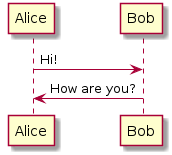

Flow¶
- date
2021-02-21
Known flows:

Login -> Flow
Contact -> Entity
Inspect -> Entity
Login¶
[A] App run
[A] Select Messenger (list *.so )
[A] Load so and create Messenger
[A] Start SrnFlow *login
[M] Login flow logical
[A] Start SrnFlow *contact
Contact¶
[A] Start SrnFlow *contact
[M] Contact flow logical
[M] Create SrnXXXBuffer(SrnEen)
Message¶
Send Text¶
[M] Register text entry signal handler
[A] User type in text entry
[M] Read message from text entry
[M] Sending
[A] Add a pending message
[M] Sent
[A] Update message state
Send Media¶
[M] Register a button
[A] User click the button
[M] Sending
[A] Add a pending message
[M] Sent
[A] Update message state
Recv text¶
[M] Recv callback
[A] Add message to buffer
Recv media¶
[M] Recv callback
[A] Add message to buffer
[M] Recv done
[A] Update message state